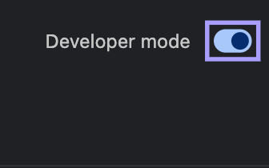
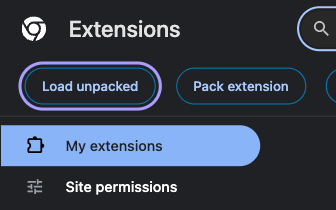
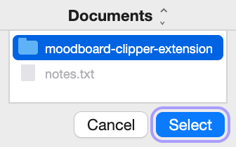
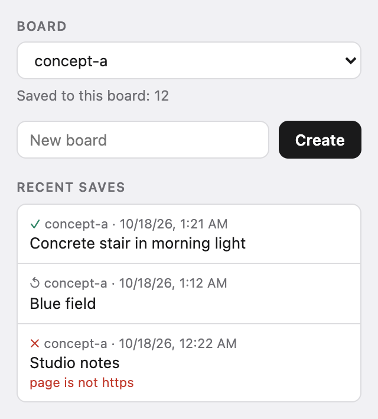

Install
The same on Mac, Windows and Linux.
Download
moodboard-clipper-extension.zipand unzip it: double-click it on a Mac; on Windows, right-click it and choose Extract All.Move the
moodboard-clipper-extensionfolder to where it will stay, for example Documents. The browser loads the extension from this folder every time it starts, so don't delete or rename it.Open
chrome://extensions(Yandex Browser:browser://extensions) and turn on Developer mode. Paste the address into the address bar: pages like this don't open from links.
The switch is in the top right corner of the extensions page. Click Load unpacked.

The button appears once Developer mode is on. Choose the
moodboard-clipper-extensionfolder.
The folder moodboard-clipper-extensionin Documents.
The Moodboard Clipper card appears. Pin the extension's icon to the toolbar to pick boards.
Other Chromium browsers have their own address for the extensions page: edge://extensions in Edge, brave://extensions in Brave. Linux, updating and removing: INSTALL.md.
To check the download, put SHA256SUMS.txt next to the zip and run shasum -a 256 -c SHA256SUMS.txt in that folder on a Mac, or sha256sum -c SHA256SUMS.txt on Linux. On Windows, open PowerShell in the folder with the zip (in File Explorer, type powershell in the address bar and press Enter) and run (Get-FileHash moodboard-clipper-extension.zip).Hash.ToLower(), then compare the result with the zip's line in SHA256SUMS.txt.
What it does
＋ on Pinterest and Cosmos
Hover over a picture and click ＋ in its corner. You get the original size where the site serves it, not the thumbnail from the feed. When the picture is saved, ＋ turns into ✓. If it was already in this board, it is not downloaded again, and the tooltip on ✓ says so.
Right-click on any page
Save to moodboard is in the menu of every picture, and it finds the picture under a link a site lays over it. On Behance the item sits in the page menu and takes the picture under the cursor.
Boards are folders
Pick or create a board in the extension's popup. Each board is a folder in Downloads/moodboard-inbox, or in a folder you pick with Own folder… in the popup: open it in Finder or drag the pictures straight into Figma.
A card next to every picture
A small JSON file with the page, the picture's address, the author when the page shows one, and the time. Its fields.

A card like the first save in the popup, shortened:
{
"schema": "moodboard-clip/1",
"board": "concept-a",
"site": "pinterest",
"page_url": "https://www.pinterest.com/pin/100000000000000001/",
"asset_url": "https://i.pinimg.com/originals/00/11/22/example.jpg",
"file": "20261018T100500Z-pinterest-100000000000000001.jpg",
"title": "Concrete stair in morning light",
"author": "unknown",
"saved_at": "2026-10-18T10:05:00Z"
}
Your boards stay on your computer
There is no server behind it and no account to create. The extension downloads the picture the way the browser would, and keeps the list of boards in the browser. Here is what each permission is for.
downloads | Saving the picture and its card into the board folder. |
|---|---|
downloads.ui, alarms | Hiding the download bubble while a save runs, and bringing it back a minute later if the browser paused the extension half way. |
storage | Boards, the last saves and the repeat check. |
contextMenus | The Save to moodboard item in the right-click menu. |
activeTab, scripting | After a right click, finding the picture under a link laid over it, only in that tab and only then. |
| Pinterest, Cosmos, Behance | The ＋ button on Pinterest and Cosmos. The page menu on Behance, where a small script notes which picture is under the cursor at each right click. A few small requests to the image servers of Pinterest and Cosmos to find the original size. |
offscreen | A hidden page of the extension that keeps your own folder open so saves can be written into it. It exists only while you have chosen one. |
| All sites (optional) | Not given at install. Asked only if you click Allow on all sites, offered after a save into your own folder from a site that does not give its picture to the extension. Used only to fetch the pictures you save, without cookies. |
What it stores and which requests it makes: the full text.
Questions
Is it in the Chrome Web Store?
Not yet. The browser loads it in developer mode from a folder you can open, and every line of it is on GitHub.
How do I update?
A new version is installed over the old one. Unzip the new archive and put its folder in place of the old one, with the same name in the same place (Finder and File Explorer will offer to replace it). Then click the reload arrow on the Moodboard Clipper card and reload open Pinterest, Cosmos and Behance tabs. If you load the folder from another place, the browser installs the extension as a new one, without the list of boards, the chosen board, the save counts, the last saves and the repeat-check data; the pictures in Downloads/moodboard-inbox stay. The extension does not check for updates by itself: new versions appear on the Releases page.
How do I remove it?
Click Remove on the Moodboard Clipper card on the extensions page. Then delete the folder if you like. Saved pictures in Downloads/moodboard-inbox stay.
Can I use the pictures I save?
Saving a picture does not give you the right to use it: it still belongs to its author. Check the author's terms before you publish or sell anything made from it.